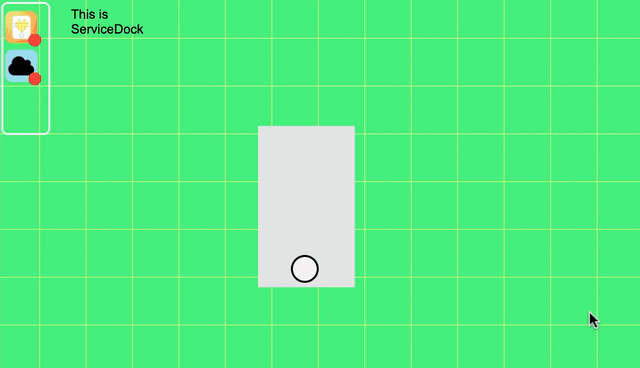

ServiceDock for SPIKE Prime
A frontend Javascript framework for building web interfaces that combine SPIKE Prime with third party services
Overview
ServiceDock allows you to easily integrate your LEGO SPIKE Prime into interactive web pages.

ServiceDock
The following code creates the ServiceDock interface you see on the top left corner of the example above. This is all you need to use ServiceDock!
<html>
<head>
<script src = "./modules/ServiceDock.js"></script>
</head>
<body>
<!-- this style must be kept for normal rendering-->
<div id = "servicedock" style = "float:left;">
<!-- include the Services to use -->
<service-systemlink id = "service_systemlink"></service-systemlink>
<service-spike id = "service_spike"></service-spike>
</div>
</body>
Services
However, to be able to connect your Services (e.g. the SPIKE Prime Service), you will need to get its object from its corresponding ServiceDock HTML element. For example, <service-spike id = "service_spike"></service-spike> is the ServiceDock HTML element for the SPIKE Prime Service. To obtain the SPIKE Prime Service object, mySPIKE, you will need to do:
var mySPIKE = document.getElementbyId("service_spike").getService();
If you wanted to get the System Link cloud Service object, the process is exactly the same:
var mySL = document.getElementbyId("service_systemlink").getService();
SPIKE Prime Service
Let's just focus on SPIKE Prime for now. mySPIKE is your SPIKE Prime Service, which will get initialized when the user of your webpage clicks on the ServiceDock SPIKE button and connects their SPIKE Prime. To mess with their SPIKE Prime after they connect it to the browser, you will need to use executeAfterInit(callback). The argument is a callback function, a fundamental way in Javascript for ensuring flow of execution. A callback function means that it will not execute until its parent function, executeAfterInit, has finished.
mySPIKE.executeAfterInit(function () {
mySPIKE.executeWithStream(getData);
})
This tells the ServiceDock to execute executeWithStream() after the SPIKE Service was initialized. But what is executeWithStream?
executeWithStream takes its own callback function and executes it forever...until the user disconnects their SPIKE Prime. This means that whatever code is inside the callback function, which in this case is getData, will be getting a live feed of sensor readings from the SPIKE Prime. This is how the image of the SPIKE Prime above was able to rotate only when the physical SPIKE Prime did.
Let's take a look at getData
async function getData() {
// get the yaw degrees of rotation of the SPIKE Prime.
var hubDeg = await hub.motion_sensor.get_yaw_angle();
// get the orientation of the hub ( e.g. "front" or "back" )
var hubOrientation = await mySPIKE.getHubOrientation();
// when the SPIKE is facing down, show the sprite of its "back", and hide the "back" sprite
// else, when the SPIKE is facing up, show the sprite of its "front", and hide the "back" sprite
if (hubOrientation == "back") {
HTMLElement = document.getElementById("back");
HTMLElement.style.display = "block";
spriteFront.style.display = "none";
} else if (hubOrientation == "front") {
HTMLElement = document.getElementById("front");
HTMLElement.style.display = "block";
spriteBack.style.display = "none";
}
// rotate the sprites the same number of degrees that the SPIKE rotates
if (HTMLElement !== undefined) {
HTMLElement.style.transform = "rotate(" + hubDeg + "deg)";
} else {
spriteFront.style.transform = "rotate(" + hubDeg + "deg)";
}
}
getData function does two things.
- It displays on the web page whether the SPIKE is facing up or down
- It rotates the displayed image of the SPIKE according to the SPIKE's yaw angle.
You will see that there is a keyword called async before the definition of getData and await before the Service's getter functions. These two keywords are necessary in Javascript if you want to ensure that you get what you want, and not a "promise" that you will get it. A good rule of thumb is: whenever you need to use await, it needs to be enclosed inside an async function. You will always want to use await when you are using a getter function.
Oops. Some variables in getData weren't declared yet, such as hub, HTMLElement, spriteBack, and spriteFront. Don't worry. Here is the full javascript code.
window.onload = function () {
var mySPIKE = document.getElementById("service_spike").getService();
/* declare HTML elements */
var spriteFront = document.getElementById("front");
var spriteBack = document.getElementById("back");
var HTMLElement;
/* declare PrimeHub */
var hub = mySPIKE.PrimeHub();
mySPIKE.executeAfterInit(function () {
mySPIKE.executeWithStream(getData);
})
async function getData() {
var hubDeg = await hub.motion_sensor.get_yaw_angle();
var hubOrientation = await mySPIKE.getHubOrientation();
if (hubOrientation == "back") {
HTMLElement = document.getElementById("back");
HTMLElement.style.display = "block";
spriteFront.style.display = "none";
} else if (hubOrientation == "front") {
HTMLElement = document.getElementById("front");
HTMLElement.style.display = "block";
spriteBack.style.display = "none";
}
if (HTMLElement !== undefined) {
HTMLElement.style.transform = "rotate(" + hubDeg + "deg)";
} else {
spriteFront.style.transform = "rotate(" + hubDeg + "deg)";
}
}
}
That's it for the Javascript code! There's much more functions you can play around with, all of which you can check out in the API documentation to the left. But the webpage wouldn't be complete with more HTML and CSS!
If you would like to try out the example if your SPIKE Prime, click here!
<html>
<head>
<script src = "./modules/ServiceDock.js"></script>
</head>
<body>
<!--ServiceDock-->
<div id="servicedock" style="float:left;">
<service-spike id="service_spike"></service-spike>
</div>
<!--the SPIKE image container-->
<div id ="hub">
<!-- sprite of the SPIKE facing up-->
<div id = "front" style = "display: block;">
<div id="mainButton"></div> <!--the main button icon-->
</div>
<!-- sprite of the SPIKE facing down-->
<div id = "back" style = "display: none"></div>
</div>
</body>
<script>
window.onload = function (){
var mySPIKE = document.getElementById("service_spike").getService();
var spriteFront = document.getElementById("front");
var spriteBack = document.getElementById("back");
var HTMLElement;
var hub = mySPIKE.PrimeHub();
mySPIKE.executeAfterInit(function () {
mySPIKE.executeWithStream(getData);
})
async function getData() {
var hubDeg = await hub.motion_sensor.get_yaw_angle();
var hubOrientation = await mySPIKE.getHubOrientation();
if (hubOrientation == "back") {
HTMLElement = document.getElementById("back");
HTMLElement.style.display = "block";
spriteFront.style.display = "none";
} else if (hubOrientation == "front") {
HTMLElement = document.getElementById("front");
HTMLElement.style.display = "block";
spriteBack.style.display = "none";
}
if (HTMLElement !== undefined) {
HTMLElement.style.transform = "rotate(" + hubDeg + "deg)";
} else {
spriteFront.style.transform = "rotate(" + hubDeg + "deg)";
}
}
}
</script>
<style>
#front {
left: 400px;
top: 200px;
position: absolute;
background-color: rgb(231,233,232);
height: 250px;
width: 150px;
transform: rotate(0deg);
}
#mainButton {
position:relative;
height:37px;
width: 37px;
left: 51px;
top: 200px;
background-color:whitesmoke;
border: solid;
border-radius:50%;
}
#back {
left: 400px;
top: 200px;
position: absolute;
background-color: rgb(252,208,0);
height: 250px;
width: 150px;
}
</style>
</html>